Core · Video walkthrough
Build Workforce foundations and record unapproved time
Connect a fictional employer, establishment, existing member, one-day employment and assignment; save and reopen two Regular hours with approval left off.
Before you begin
- An authorized Core account with access to the demonstrated Workforce forms.
- A fictional practice department; this example uses existing fictional member Matthew Casey and an existing training personnel role.
- Review existing records first. Do not overwrite an employer profile, duplicate an existing worker, overlap dated records or reuse another work-entry reference.
- Only browser configuration and stored readbacks are demonstrated. No attendance, payroll, legal-coverage, compensation, resource-cost or cost-run outcome is established.
Chapters
- Start with the Workforce overview
- Enter a clearly identified practice employer
- Save without declaring coverage
- Add an establishment with a recognizable code
- Check the establishment dates and saved row
- Link the existing member as a worker
- Create a deliberately short employment period
- Choose the period defaults and save the correct form
- Give the job assignment its own dates and location
- Save the assignment without inventing classifications
- Use the correct work-entry date window
- Prepare two Regular hours with the intended location
- Keep the entry unapproved and identify its source
- Verify the saved entry and fresh readback
- Review the foundation and apply the pattern
Watch the walkthrough
Step 1
Start with the Workforce overview
Workforce gives administrators a place to connect an employer, operating locations, people, and dated work records. Start on the Workforce Overview. The empty example has no employer profile, workers, or employments. We will build one small training record, then save two unapproved hours. Use an account authorized for these pages and a fictional practice department. These entries describe a software exercise, not verified attendance or payroll.

Practice
Identify the employer, worker and employment counts before making any practice changes.
Step 2
Enter a clearly identified practice employer
Open Employer and find Employer profile. In Legal name, enter a clearly marked training name; this example uses Community coordination services with a TRAINING ONLY prefix. Tax identifiers, addresses, and filing contacts stay empty in this clean practice profile. Read the blue protection notice before editing an existing employer. Review stored information carefully rather than replacing a real organization’s details with the values from this demonstration.
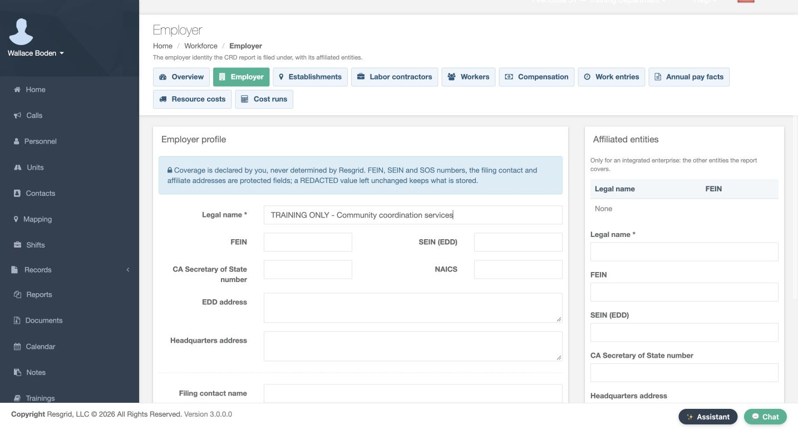
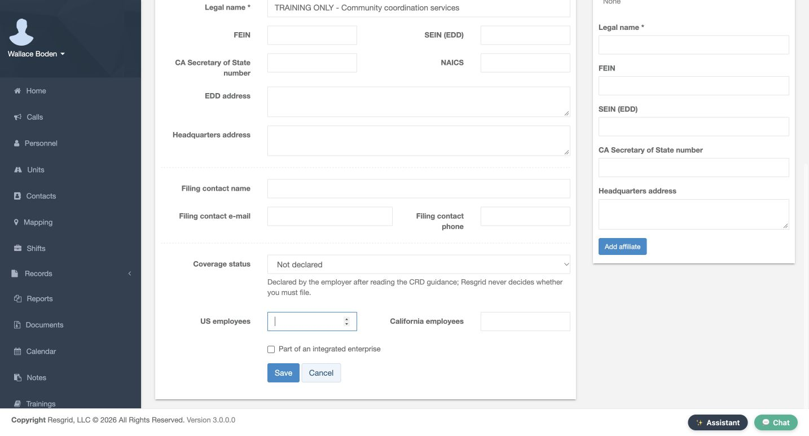
Practice
In a clean training profile, choose a fictional name. In an existing profile, review without replacing stored details.
Step 3
Save without declaring coverage
Scroll to Coverage status. Keep Not declared for this fictional example, leave the employee headcounts empty, and leave Part of an integrated enterprise unchecked. This exercise makes no decision about filing coverage. Choose Save at the bottom of the employer form. The Saved message confirms the response, and the fresh employer view retains the training name. Check that name before moving on to the location records.
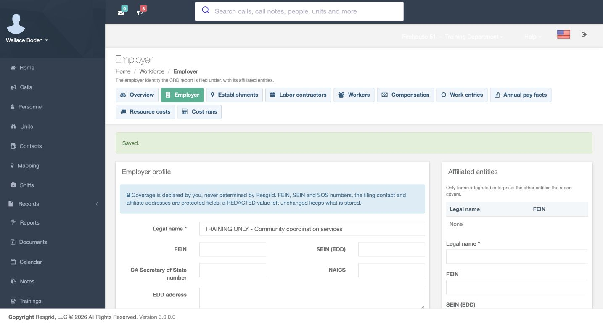
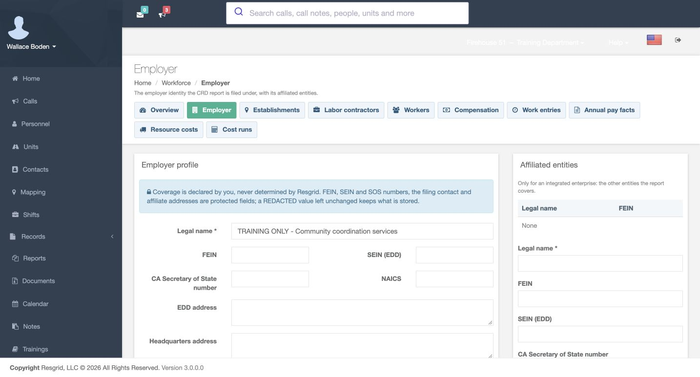
Practice
Locate the lower employer Save, then compare the saved and fresh name readbacks without resaving.
Step 4
Add an establishment with a recognizable code
Open Establishments and choose Add establishment. An establishment gives later records a named operating location. Enter a recognizable Code and Name. Here the code is TRN-COMM-28, and State is IL. Major activity describes fictional coordination exercises. The address and industry-code fields remain blank in this example. A short, distinctive code helps you recognize the same location when a worker or time-entry form offers it later.
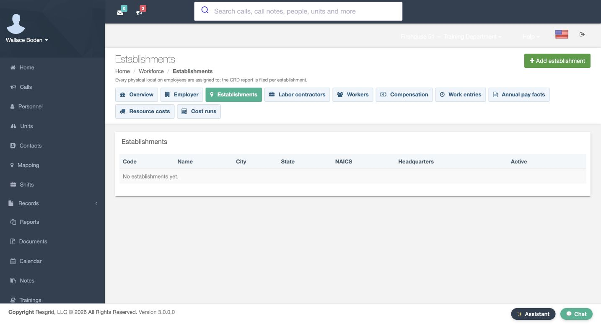
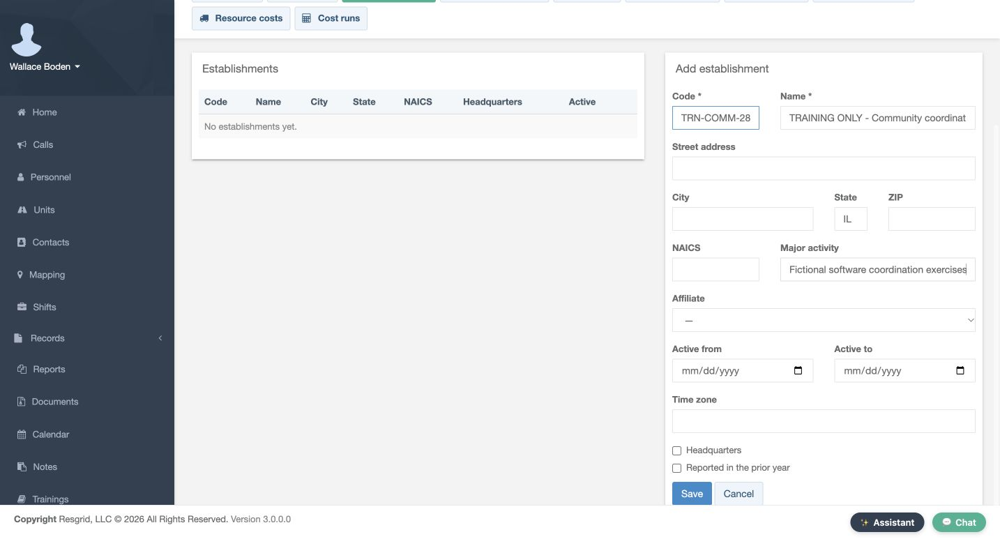
Practice
Read back the code and state before saving; use a new unique code only in a separately authorized practice setup.
Step 5
Check the establishment dates and saved row
Continue down the establishment form. Set Active from to October twenty-eighth, twenty twenty-six, leave Active to empty, and enter America slash Chicago in Time zone. Headquarters and Reported in the prior year remain unchecked. Choose this form’s Save. The catalog now shows the training base, IL, and Active Yes. In the reopened establishment, check the date and time zone again so the saved location matches the setup you intended.
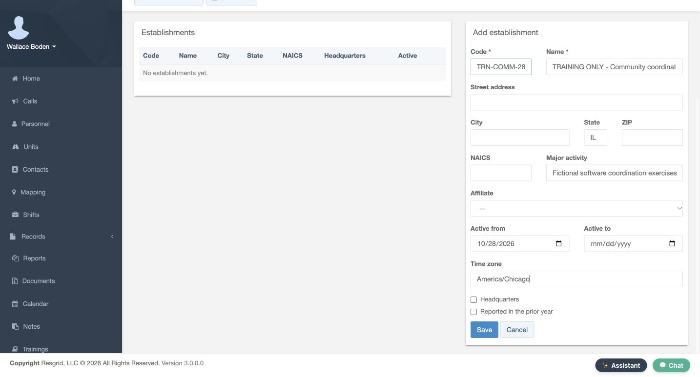
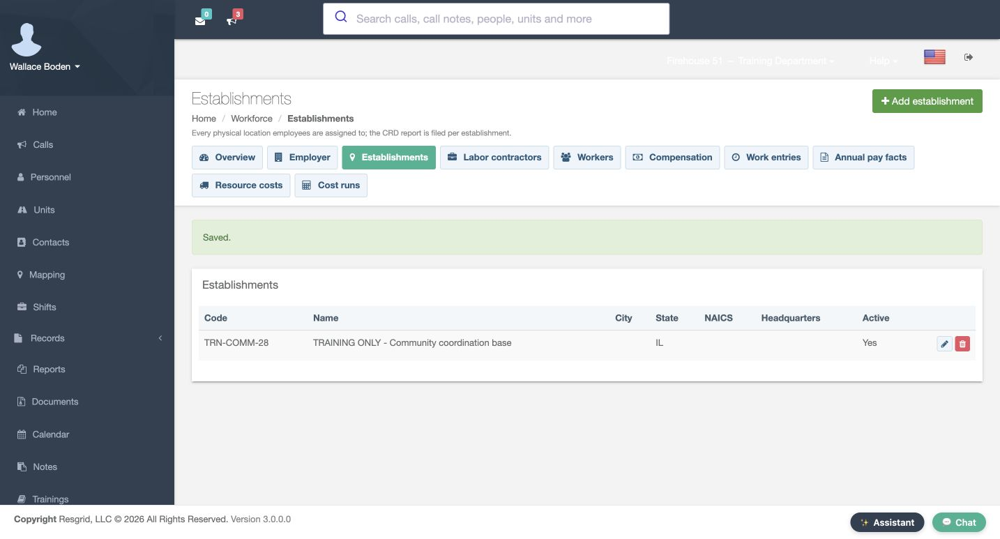
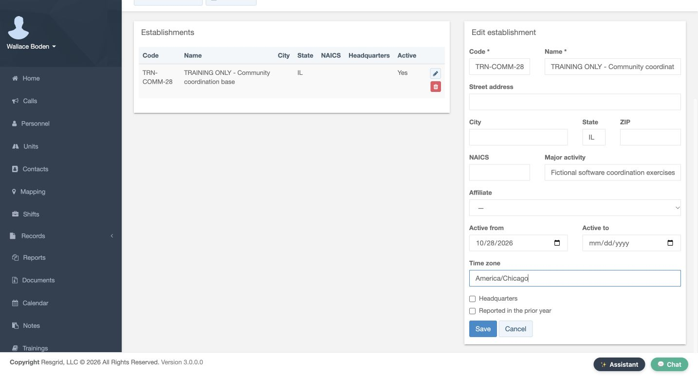
Practice
Compare the catalog’s full training name with the reopened code, date and time zone; do not resave merely to inspect.
Step 6
Link the existing member as a worker
Open Workers. The Add worker panel offers a Member picker and separate External worker key and Display label fields. For this example, select the existing fictional member Matthew Casey, leave the external fields blank, and choose Add worker. Casey’s Worker page opens with Active checked and no employment periods yet. This creates a Workforce link for an existing member; it does not invite a new user or assign anyone to an operational crew.
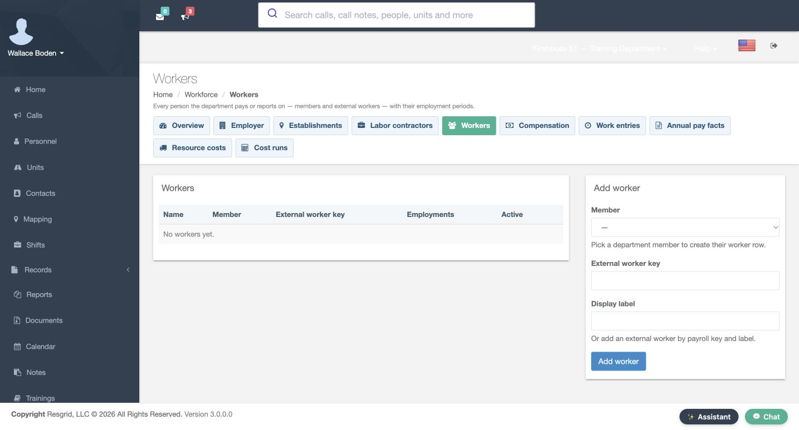
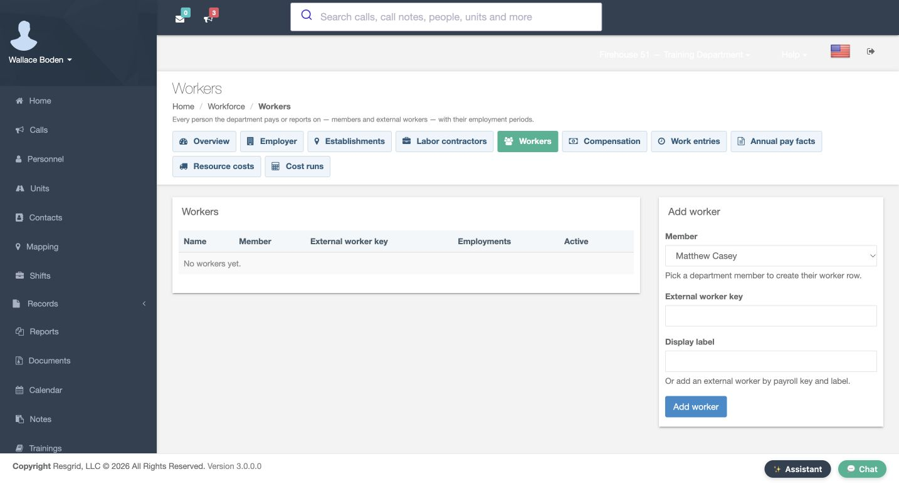
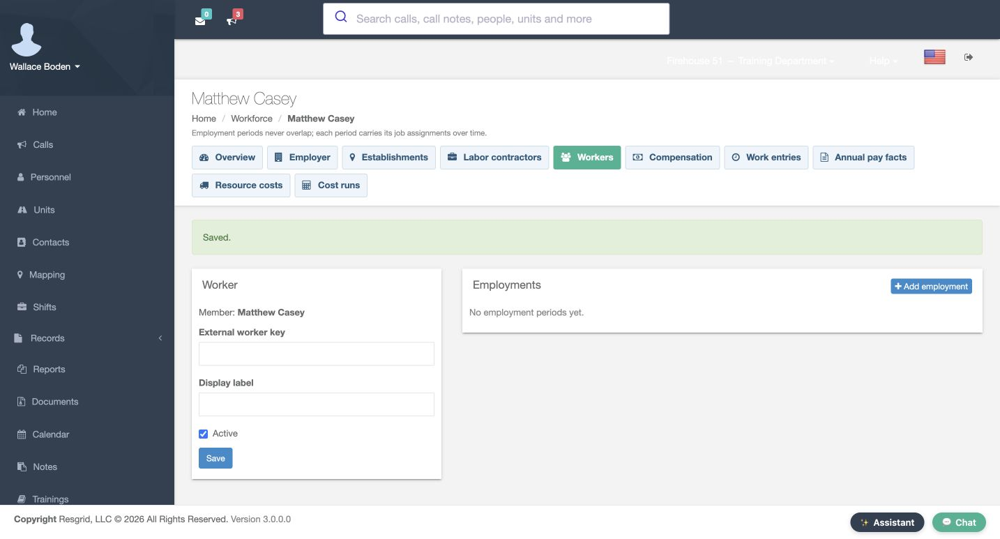
Practice
Distinguish the existing-member path from the external-worker fields. Reuse an existing training worker for read-only review rather than adding it again.
Step 7
Create a deliberately short employment period
From Casey’s page, choose Add employment. Worker kind is Volunteer in this practice record. Set Start and End to the same October twenty-eighth date to keep the example limited to one day. Employment type and Exemption remain Unknown. The dates belong to this worker’s employment period, rather than the establishment’s active window. Before saving, check the person and both dates so you do not attach the exercise to the wrong period.
Practice
Read the worker name and both dates. Do not add an overlapping period to the already-created example.
Step 8
Choose the period defaults and save the correct form
Select the training base in Default establishment and the existing Community response navigator training role in Personnel role. The role field helps choose compensation defaults; it does not change Casey’s response staffing. Leave Labor contractor and Affiliate blank. Scroll to the Save inside the employment panel, below those choices; the Worker panel has a separate Save. After saving, the one-day Volunteer period appears, and its reopened form retains the selected defaults.
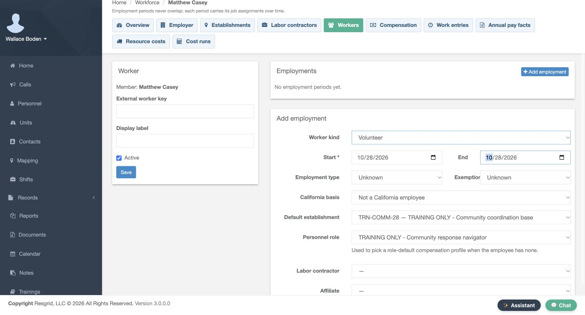
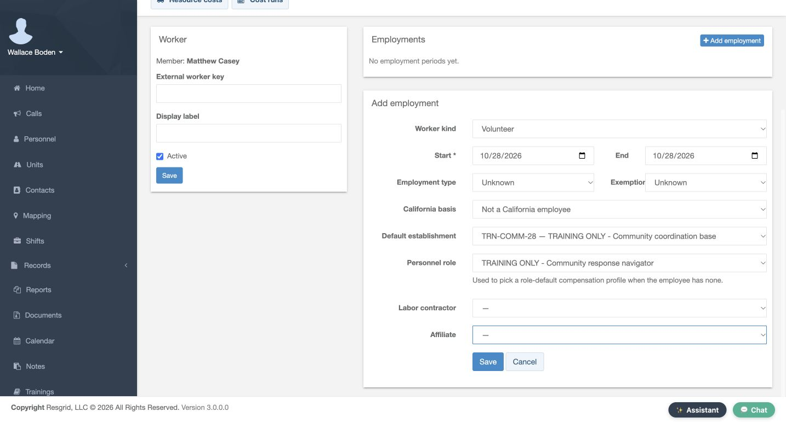
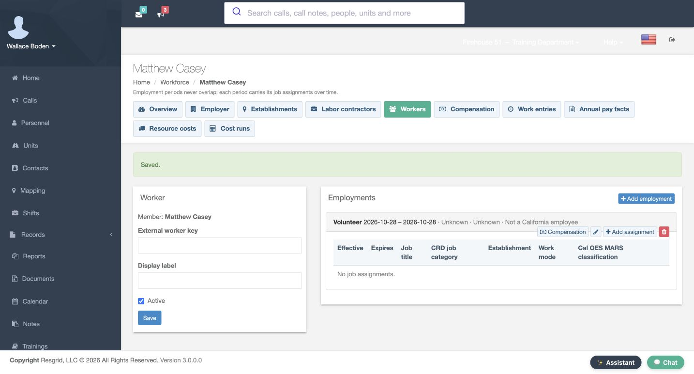
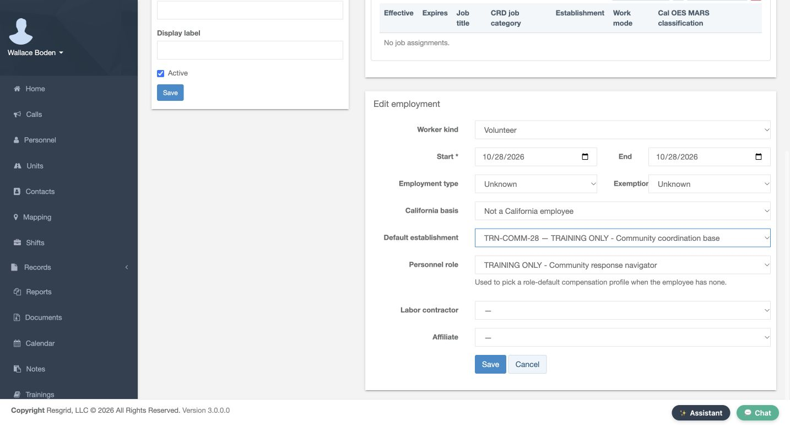
Practice
Locate the employment-panel Save rather than the separate worker Save. Verify the stored period and defaults.
Step 9
Give the job assignment its own dates and location
Within that period, choose Add assignment. Check the new form: it carries the establishment forward, but Work location initially shows US and CA. Change the state to IL for this exercise. Give Effective and Expires the same one-day bounds, enter the TRAINING ONLY Coordination exercise job title, and keep Work mode Non-remote. Review the location explicitly; inheriting an establishment does not mean every other location field was copied with it.
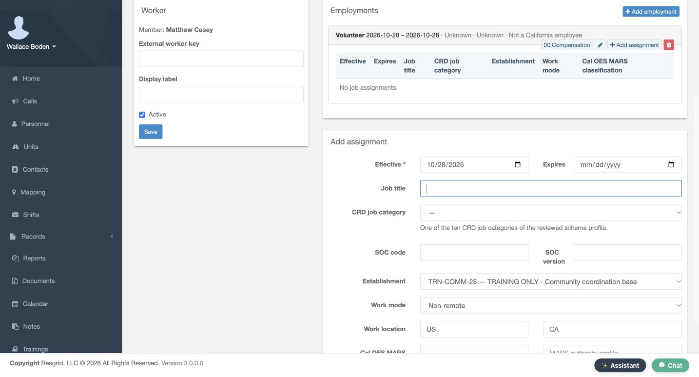
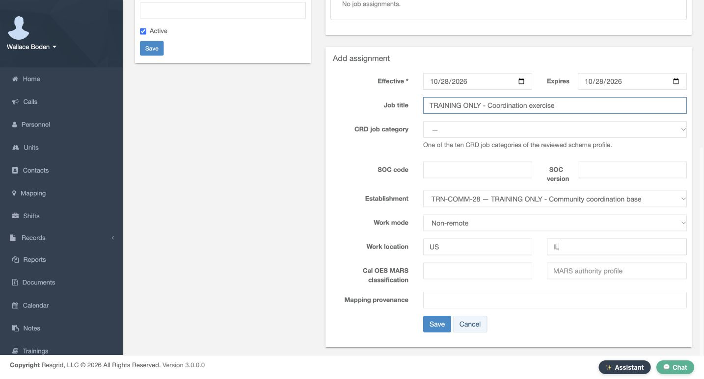
Practice
Compare the initial CA field with the prepared IL value. Check assignment dates separately from employment dates.
Step 10
Save the assignment without inventing classifications
The assignment also has CRD job category, SOC, and Cal OES MARS classification fields. We leave those classifications and Mapping provenance empty in this fictional exercise; a training title supplies no classification authority. Choose Save in the assignment form. Its row now shows the dated coordination exercise, the training establishment, and Non-remote. In the reopened assignment, verify IL and the matching dates before continuing to the daily work entry.
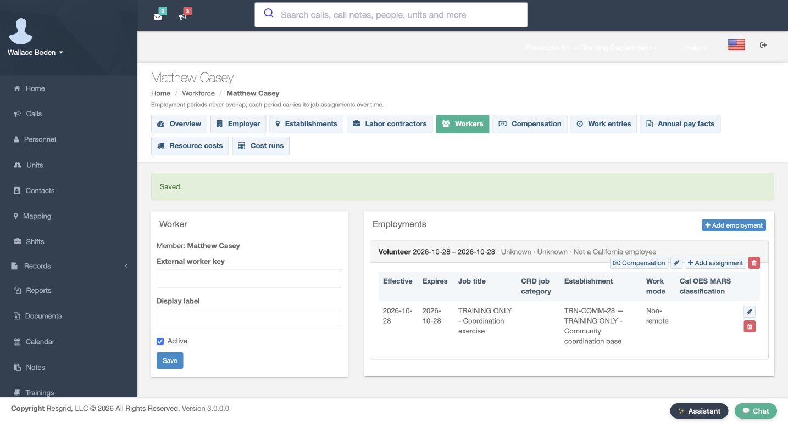
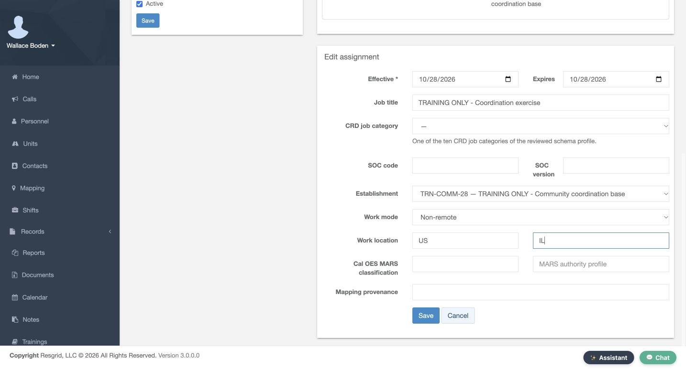
Practice
Confirm the saved title and establishment, then inspect the fresh IL/date readback without changing classification fields.
Step 11
Use the correct work-entry date window
Open Work entries. The two date controls define the list’s viewing window; the displayed window includes October twenty-eighth. No entries are listed yet. Check the window before assuming a saved record is missing. Choose Add work entry to open the entry panel beside the list. This page records a worker and date, hours, location, and supporting context, so keep the training worker and the intended day together as you fill it.
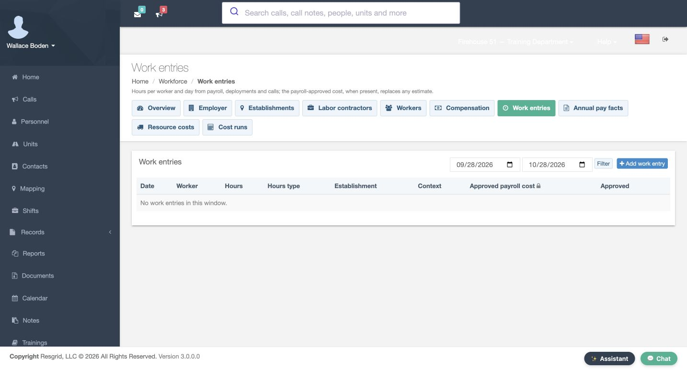
Practice
Confirm the displayed window includes the practice day before looking for the entry. No filter-change success is demonstrated here.
Step 12
Prepare two Regular hours with the intended location
Check Worker is Matthew Casey and Date is October twenty-eighth. Enter two in Hours and keep Hours type Regular. Select the training establishment and keep Work mode Non-remote. Under Country and State slash province, use US and IL. These location fields also need their own review. The two hours are a fictional software example, so choose values appropriate to your authorized practice record rather than treating the demonstration as evidence someone actually worked.
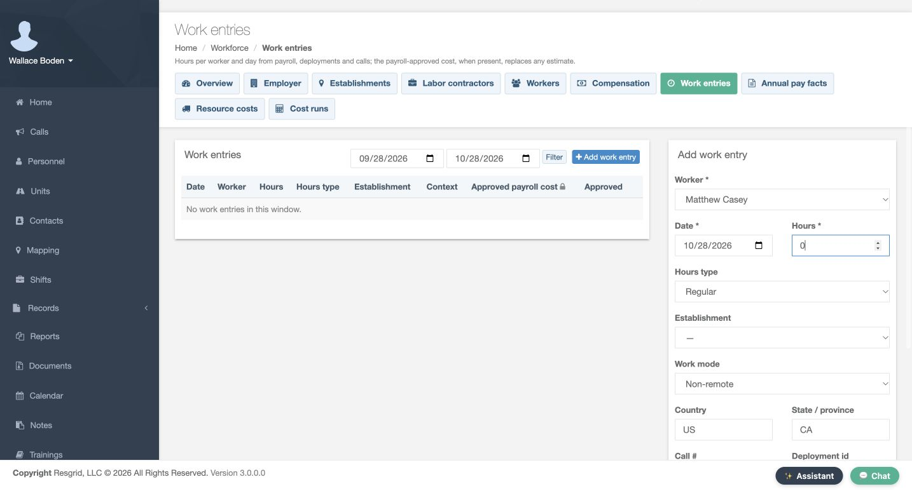
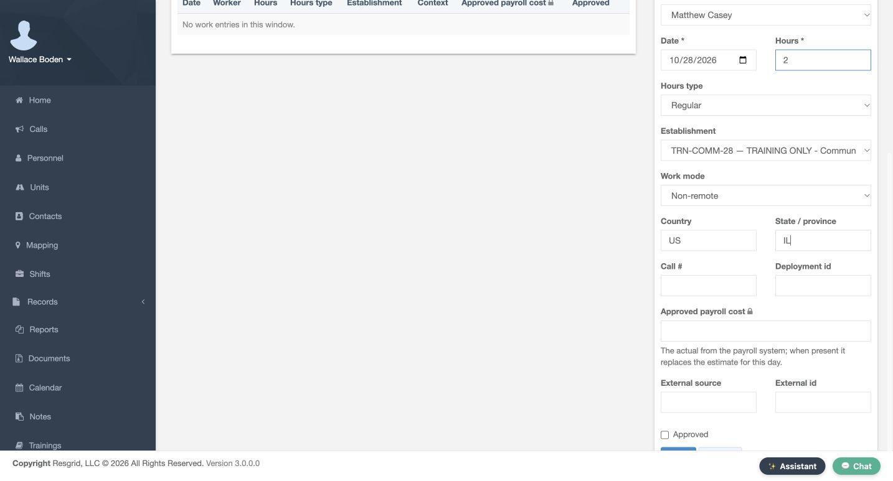
Practice
Read worker, date, hours type and location back together. Distinguish the initial CA default from the prepared IL value.
Step 13
Keep the entry unapproved and identify its source
Continue to the lower form. Leave Call number and Deployment id empty because this exercise is not linked to an incident or deployment. Approved payroll cost stays blank, and Approved stays unchecked. Use External source and a distinct External id to identify your authorized training entry; do not reuse another record’s reference. These narrow inputs may clip long text. Review the form, then choose Save to store the unapproved entry.
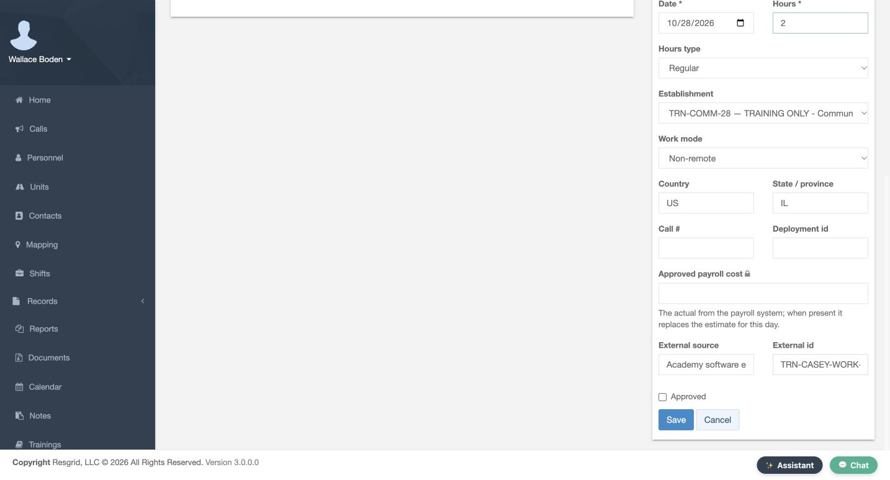
Practice
Identify the unchecked Approved control and separate empty payroll-cost field. Do not infer a full external value from the clipped input.
Step 14
Verify the saved entry and fresh readback
The saved list now shows Casey, two Regular hours, the training establishment, and Academy software exercise in Context. Approved reads No. The fresh Edit work entry view retains the worker, date, hours, and Illinois location. Lower down, Approved is still unchecked and the payroll-cost box is empty. This is the useful stopping point: a stored, reviewable training record. Saving has not approved payroll, paid anyone, or verified attendance.
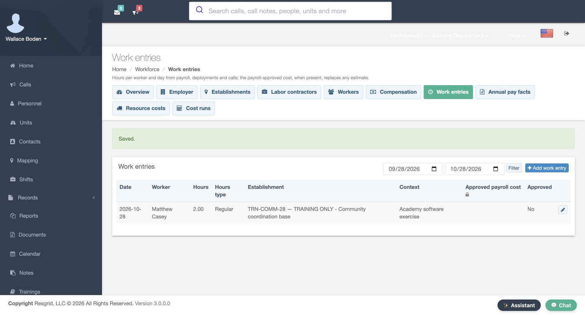
Practice
Compare the saved row with both parts of the fresh edit form. Finish without resaving or approving the example.
Step 15
Review the foundation and apply the pattern
Return to Overview. One establishment, one worker, and one employment are now recorded; coverage remains Not declared, with no resource profiles or cost runs. Use the same prepare, save, and read-back pattern for fire and EMS training administration, community-care or mental-health coordination, search-and-rescue volunteers, security teams, wildland contractors, and industrial response teams. Keep each organization’s real classifications and approvals with its authorized reviewers. The common skill is connecting the right person, dates, place, and unapproved record before further review.
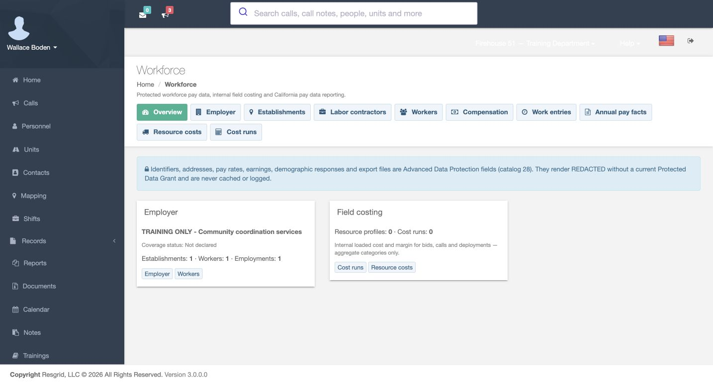
Practice
Explain which records were saved and which approvals or costing activities were not performed.
Examples for your department
- Fire / EMS
- Practice linking a training member to a dated training-base assignment and an unapproved work entry; do not treat it as verified station attendance.
- Community response
- Use the same location, worker and dated-assignment review for community-care coordination; keep sensitive client details outside this software exercise.
- Search and rescue
- Practice a one-day volunteer coordination period and confirm the saved dates before reviewing an unapproved entry.
- Security
- Use a clearly marked training site and worker record to rehearse date/location checks without claiming a completed patrol.
- Wildland
- Use contractor-team practice context to check worker, assignment bounds and work location; this lesson creates no labor-contractor entity or legal classification.
- Industrial
- Use a fictional operating establishment and dated coordination assignment; saving the entry supplies no payroll approval or physical-response verification.
Transcript
Download transcriptRead the complete transcript
Build Workforce foundations and record unapproved time Audience: Department administrators and workforce coordinators authorized to manage these pages. Start with the Workforce overview Workforce gives administrators a place to connect an employer, operating locations, people, and dated work records. Start on the Workforce Overview. The empty example has no employer profile, workers, or employments. We will build one small training record, then save two unapproved hours. Use an account authorized for these pages and a fictional practice department. These entries describe a software exercise, not verified attendance or payroll. Practice: Identify the employer, worker and employment counts before making any practice changes. Enter a clearly identified practice employer Open Employer and find Employer profile. In Legal name, enter a clearly marked training name; this example uses Community coordination services with a TRAINING ONLY prefix. Tax identifiers, addresses, and filing contacts stay empty in this clean practice profile. Read the blue protection notice before editing an existing employer. Review stored information carefully rather than replacing a real organization’s details with the values from this demonstration. Practice: In a clean training profile, choose a fictional name. In an existing profile, review without replacing stored details. Save without declaring coverage Scroll to Coverage status. Keep Not declared for this fictional example, leave the employee headcounts empty, and leave Part of an integrated enterprise unchecked. This exercise makes no decision about filing coverage. Choose Save at the bottom of the employer form. The Saved message confirms the response, and the fresh employer view retains the training name. Check that name before moving on to the location records. Practice: Locate the lower employer Save, then compare the saved and fresh name readbacks without resaving. Add an establishment with a recognizable code Open Establishments and choose Add establishment. An establishment gives later records a named operating location. Enter a recognizable Code and Name. Here the code is TRN-COMM-28, and State is IL. Major activity describes fictional coordination exercises. The address and industry-code fields remain blank in this example. A short, distinctive code helps you recognize the same location when a worker or time-entry form offers it later. Practice: Read back the code and state before saving; use a new unique code only in a separately authorized practice setup. Check the establishment dates and saved row Continue down the establishment form. Set Active from to October twenty-eighth, twenty twenty-six, leave Active to empty, and enter America slash Chicago in Time zone. Headquarters and Reported in the prior year remain unchecked. Choose this form’s Save. The catalog now shows the training base, IL, and Active Yes. In the reopened establishment, check the date and time zone again so the saved location matches the setup you intended. Practice: Compare the catalog’s full training name with the reopened code, date and time zone; do not resave merely to inspect. Link the existing member as a worker Open Workers. The Add worker panel offers a Member picker and separate External worker key and Display label fields. For this example, select the existing fictional member Matthew Casey, leave the external fields blank, and choose Add worker. Casey’s Worker page opens with Active checked and no employment periods yet. This creates a Workforce link for an existing member; it does not invite a new user or assign anyone to an operational crew. Practice: Distinguish the existing-member path from the external-worker fields. Reuse an existing training worker for read-only review rather than adding it again. Create a deliberately short employment period From Casey’s page, choose Add employment. Worker kind is Volunteer in this practice record. Set Start and End to the same October twenty-eighth date to keep the example limited to one day. Employment type and Exemption remain Unknown. The dates belong to this worker’s employment period, rather than the establishment’s active window. Before saving, check the person and both dates so you do not attach the exercise to the wrong period. Practice: Read the worker name and both dates. Do not add an overlapping period to the already-created example. Choose the period defaults and save the correct form Select the training base in Default establishment and the existing Community response navigator training role in Personnel role. The role field helps choose compensation defaults; it does not change Casey’s response staffing. Leave Labor contractor and Affiliate blank. Scroll to the Save inside the employment panel, below those choices; the Worker panel has a separate Save. After saving, the one-day Volunteer period appears, and its reopened form retains the selected defaults. Practice: Locate the employment-panel Save rather than the separate worker Save. Verify the stored period and defaults. Give the job assignment its own dates and location Within that period, choose Add assignment. Check the new form: it carries the establishment forward, but Work location initially shows US and CA. Change the state to IL for this exercise. Give Effective and Expires the same one-day bounds, enter the TRAINING ONLY Coordination exercise job title, and keep Work mode Non-remote. Review the location explicitly; inheriting an establishment does not mean every other location field was copied with it. Practice: Compare the initial CA field with the prepared IL value. Check assignment dates separately from employment dates. Save the assignment without inventing classifications The assignment also has CRD job category, SOC, and Cal OES MARS classification fields. We leave those classifications and Mapping provenance empty in this fictional exercise; a training title supplies no classification authority. Choose Save in the assignment form. Its row now shows the dated coordination exercise, the training establishment, and Non-remote. In the reopened assignment, verify IL and the matching dates before continuing to the daily work entry. Practice: Confirm the saved title and establishment, then inspect the fresh IL/date readback without changing classification fields. Use the correct work-entry date window Open Work entries. The two date controls define the list’s viewing window; the displayed window includes October twenty-eighth. No entries are listed yet. Check the window before assuming a saved record is missing. Choose Add work entry to open the entry panel beside the list. This page records a worker and date, hours, location, and supporting context, so keep the training worker and the intended day together as you fill it. Practice: Confirm the displayed window includes the practice day before looking for the entry. No filter-change success is demonstrated here. Prepare two Regular hours with the intended location Check Worker is Matthew Casey and Date is October twenty-eighth. Enter two in Hours and keep Hours type Regular. Select the training establishment and keep Work mode Non-remote. Under Country and State slash province, use US and IL. These location fields also need their own review. The two hours are a fictional software example, so choose values appropriate to your authorized practice record rather than treating the demonstration as evidence someone actually worked. Practice: Read worker, date, hours type and location back together. Distinguish the initial CA default from the prepared IL value. Keep the entry unapproved and identify its source Continue to the lower form. Leave Call number and Deployment id empty because this exercise is not linked to an incident or deployment. Approved payroll cost stays blank, and Approved stays unchecked. Use External source and a distinct External id to identify your authorized training entry; do not reuse another record’s reference. These narrow inputs may clip long text. Review the form, then choose Save to store the unapproved entry. Practice: Identify the unchecked Approved control and separate empty payroll-cost field. Do not infer a full external value from the clipped input. Verify the saved entry and fresh readback The saved list now shows Casey, two Regular hours, the training establishment, and Academy software exercise in Context. Approved reads No. The fresh Edit work entry view retains the worker, date, hours, and Illinois location. Lower down, Approved is still unchecked and the payroll-cost box is empty. This is the useful stopping point: a stored, reviewable training record. Saving has not approved payroll, paid anyone, or verified attendance. Practice: Compare the saved row with both parts of the fresh edit form. Finish without resaving or approving the example. Review the foundation and apply the pattern Return to Overview. One establishment, one worker, and one employment are now recorded; coverage remains Not declared, with no resource profiles or cost runs. Use the same prepare, save, and read-back pattern for fire and EMS training administration, community-care or mental-health coordination, search-and-rescue volunteers, security teams, wildland contractors, and industrial response teams. Keep each organization’s real classifications and approvals with its authorized reviewers. The common skill is connecting the right person, dates, place, and unapproved record before further review. Practice: Explain which records were saved and which approvals or costing activities were not performed. Examples for your department Fire / EMS: Practice linking a training member to a dated training-base assignment and an unapproved work entry; do not treat it as verified station attendance. Community response: Use the same location, worker and dated-assignment review for community-care coordination; keep sensitive client details outside this software exercise. Search and rescue: Practice a one-day volunteer coordination period and confirm the saved dates before reviewing an unapproved entry. Security: Use a clearly marked training site and worker record to rehearse date/location checks without claiming a completed patrol. Wildland: Use contractor-team practice context to check worker, assignment bounds and work location; this lesson creates no labor-contractor entity or legal classification. Industrial: Use a fictional operating establishment and dated coordination assignment; saving the entry supplies no payroll approval or physical-response verification.